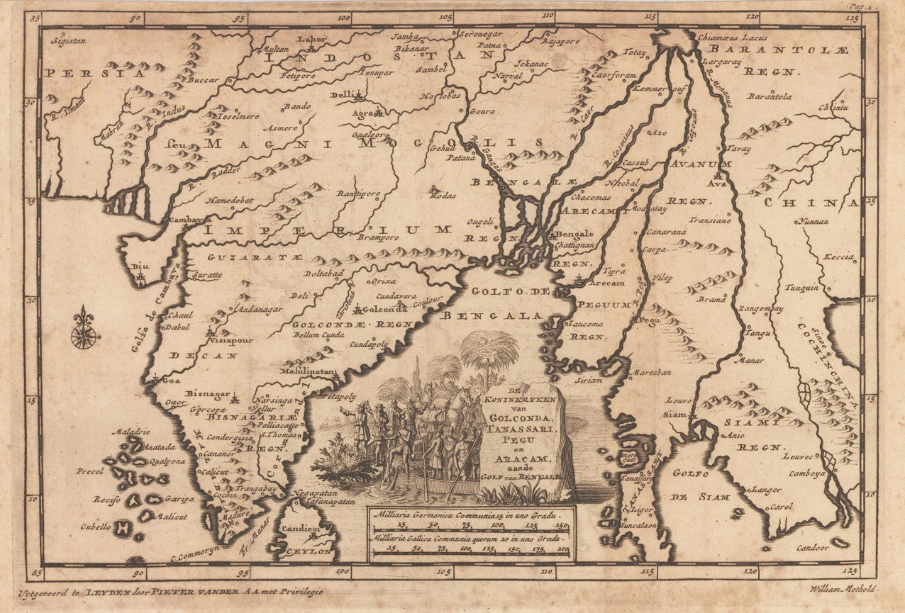

← Baroque, Mughals and Companies

A publisher’s India
Pieter van der Aa of Leiden was the most industrious map publisher of his generation, and the least original. Between 1706 and 1708 he issued the Naaukeurige versameling der gedenk-waardigste zee en land-reysen, a collection of voyages in twenty-eight volumes in which each narrative, old or new, received a small engraved map in a uniform style. This sheet, numbered ‘Pag. 1’ in its corner, opened the volume containing Methold. The signature ‘William Methold’ at the lower right is not a cartographer’s credit but a label: the map belongs to his text.
Methold at Masulipatnam
William Methold was an East India Company factor on the Coromandel coast from 1618 to 1622, based at Masulipatnam, the Qutb Shahi port through which the Company bought the painted cottons it sold in the spice islands. His Relations of the Kingdome of Golchonda, and other neighbouring nations within the Gulfe of Bengala was printed in the fourth edition of Samuel Purchas’s Purchas his Pilgrimage in 1626 and is the earliest detailed English description of the Golconda state: the sultan Muhammad Qutb Shah, the fortress and the new city of Hyderabad, the diamond mines of the Krishna valley, the coinage, the caste order of the coast and the administration of the port. The map follows the text’s horizon. ‘Golcondæ Regn.’ is given its coast from Masulipatnam to Bellum Cunda; the mines appear; and the remaining kingdoms of the title – Tenasserim, Pegu and Arakan – are the other shores of the same gulf, visited by the same Company ships.
What the plate knows
The interior is a century behind the date. ‘Bisnagariæ Regn.’ still fills the south, with Bisnagar and Narsinga as its cities, although Vijayanagara had been sacked in 1565 and the Aravidu line had retreated to Chandragiri before Methold wrote. ‘Decan’ and ‘Visiapour’ stand for Bijapur; ‘Magni Mogolis Imperium’ stops at the Tapti. And by 1706 Golconda itself had been a Mughal province for nineteen years. None of this is an error so much as a method: van der Aa drew what the voyages said, and the voyages were old. The vignette at the centre, a palanquin and a river boat under a palm, is the same stock scene of eastern travel that decorated his other plates.
The gaze
The collection’s argument is that a map records who is looking. Here two eyes are superimposed. Methold’s was a factor’s: he looked at Golconda as a market, noted what sold, what was taxed and who governed the port, and his notice of the mines is among the fullest of the early European notices of Golconda’s diamonds – Garcia da Orta, Cesare Federici and Ralph Fitch had written of the Deccan’s diamonds before him. Van der Aa’s was a bookseller’s: he looked at Methold as a property to be packaged, and gave it a map whose purpose was uniformity with the other twenty-seven volumes rather than accuracy about the Deccan. The sheet is the Dutch book trade’s view of the English Company’s view of the Qutb Shahi state – and a reminder that, in Europe, what was known about the Deccan in 1706 was often what had been known in 1620.
In the Deccan timeline
Golconda and its diamonds (1518–1590) · Hyderabad founded (1591) · Masulipatnam, Madras, Bombay (1611–1668) · Madanna and Akkanna at Golconda (c. 1674–1686) · Aurangzeb takes Bijapur and Golconda (1686–1687) · Papadu (c. 1695–1710)